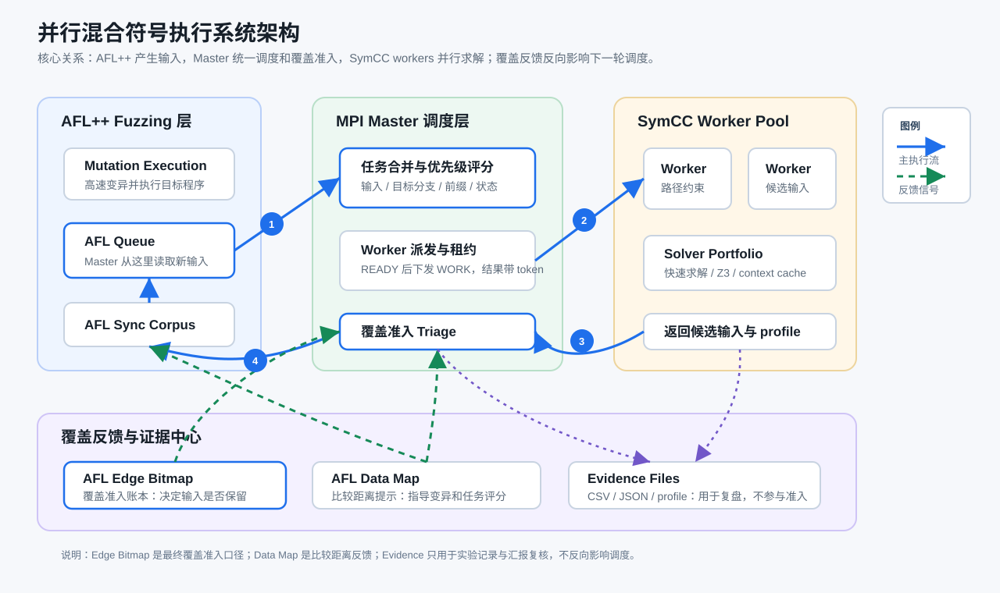
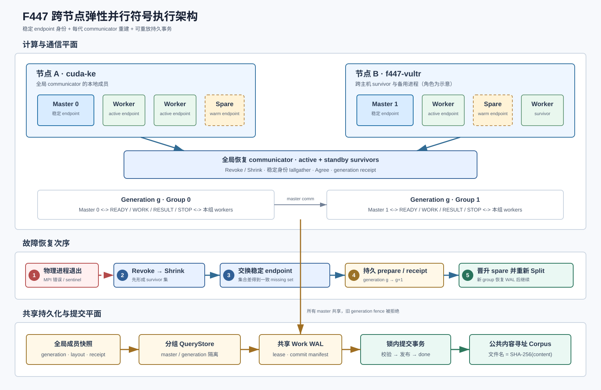
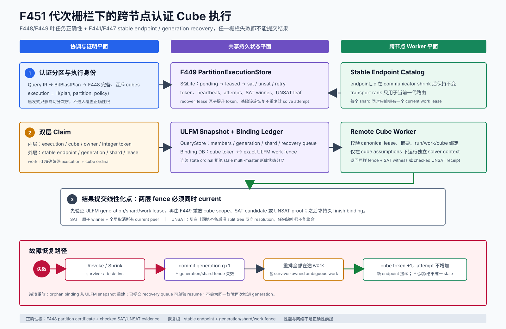
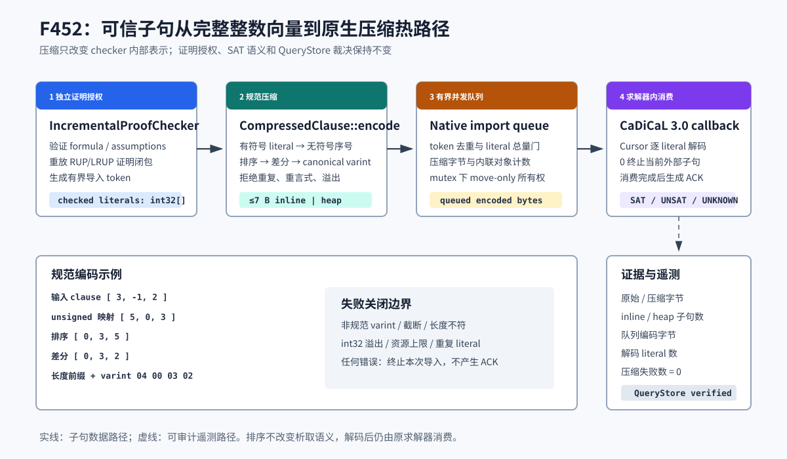
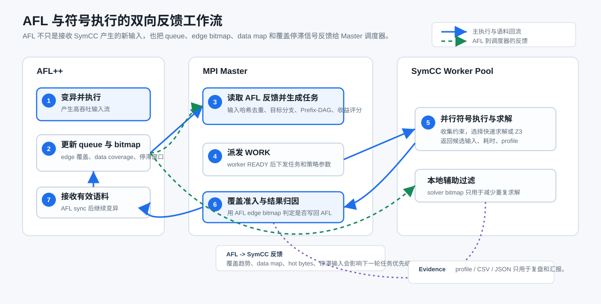
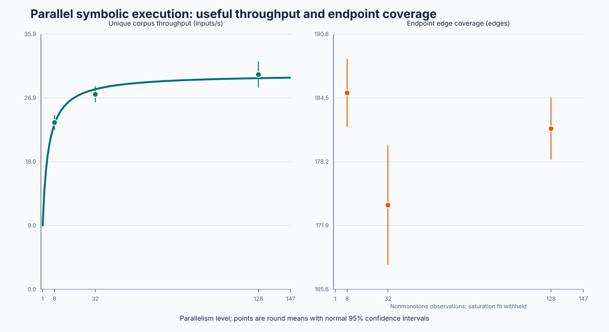

第一章 项目定位与研究目标
本项目面向程序测试中的覆盖率提升问题，构建并行混合符号执行框架。系统以 fuzzing 作为高吞吐输入生成基础，以动态符号执行补充对复杂路径条件的分析能力，并通过并行调度提高符号执行资源的利用效率。
传统 fuzzing 具有很高的执行吞吐，但主要依赖随机变异。当程序分支依赖精确值、跨字段关系或复杂比较时，随机变异难以稳定触达深层路径。
动态符号执行能够记录路径约束，并通过求解器生成满足目标分支条件的新输入，从而补充 fuzzing 在复杂条件上的不足。
符号执行本身计算成本较高。框架将输入、目标分支、约束上下文和执行状态抽象为任务，分配给多个 worker 并行处理。
所有候选输入均由 Master 使用 AFL edge bitmap 进行最终判定。只有带来新增覆盖的输入才进入语料，保证实验结论可复核。
第二章 近期工作进展与成效
最近一阶段的工作从单机吞吐优化推进到跨节点连续运行、可审计规模评估和查询内并行求解。F447 完成两节点、双 Master、warm spare 的连续物理失效恢复，并在实验单元超过 30 后封存 35 个完整结果；F448/F449 完成认证 cube 的查询内并行，F450 降低重复证明重放开销，F451 将 cube 租约与 ULFM generation fence 绑定，F452 压缩 checker 侧的原生子句表示，F453 再以可信 solver activity 和在线成本反馈动态选择分区策略与 cube 数，形成从任务恢复、求解收敛、证明传输到自适应决策的完整优化链。
| 近期工作 | 解决的问题 | 取得的效果 | 汇报时的重点 |
|---|---|---|---|
| 跨节点连续恢复 | 进程失效后，各节点对故障成员的局部观察可能不同，旧 communicator 也不能继续使用。 | 采用 Revoke/Shrink、稳定 endpoint 身份交换、generation receipt 和 warm spare 晋升，连续恢复两次。 | 系统已从单机恢复演示推进到跨节点、跨代继续提交的受控机制门禁。 |
| 恢复后的持久一致性 | 多 Master 在恢复后可能重复发布结果，或读到上一代状态。 | 引入按 Master/代次隔离的 QueryStore、共享 Work WAL 和锁内幂等提交；最终验证 820 个内容寻址公共对象。 | 恢复不仅重建通信，还保证工作记录和公共 corpus 可重放、可核验。 |
| 并行规模实测 | 旧数据只有三轮短测，无法量化高并行度的吞吐、覆盖和失败风险。 | 在相同 130 核预留和 60 秒测量窗口下比较 8/32/128 workers；按用户要求在超过 30 个单元后停止，封存 35 个完整单元。 | 性能统计只采用三档都成功的 9 个配对区组；可靠性统计采用 11 个完整区组。 |
| 规模收益与代价 | 更多 worker 是否真正转化为有效输入和覆盖不清楚。 | 128 对 8 workers 的生成吞吐提升 50.52%，有效输入吞吐提升 29.29%；endpoint edges 无显著提升，保留率下降 13.98%。 | 并行提升了候选处理能力，但小型饱和目标上的覆盖没有随规模单调增长。 |
| 失败语义修复 | 两次 128-worker 内层 MPI 运行以 70 退出，但旧 driver 仍把外层进程标记为成功。 | benchmark 现在保存报告后返回非零；显式 benchmark 模式若零目标匹配也会失败关闭。 | 128-worker 内部失败率为 2/11，即 18.18%，不再被外层成功状态掩盖。 |
| 证明感知的查询内并行 | 过去分区器只生成 cube 目录，主查询服务没有真正执行 cube，也不能把叶级 UNSAT 结论合成为原查询结论。 | F448/F449 完成分区、租约调度、独立求解上下文、SAT 抢先取消、UNSAT 分辨率聚合和生命周期回收闭环。 | 并行不再只发生在输入之间，也可发生在单个困难 QF_BV 查询内部；所有返回结果仍需通过模型或证明重放。 |
| 闭包绑定的证明缓存 | 相同不可变 plan 上的重复授权会反复解析、遍历和重放整个 LRUP import closure。 | F450 将缓存授权与 plan、checker policy 和完整导入闭包绑定；64 层机制实验中位加速比 25.39×。 | 优化的是重复检查成本，不缓存求解结论，命中后仍校验完整闭包证言。 |
| 跨节点认证 cube 执行 | 本地 cube token 不能阻止旧 communicator 上的结果在节点恢复后越代提交。 | F451 将 cube lease 与 stable endpoint、generation、shard 和 work fence 双重绑定；3 轮双主机实验均完成失效恢复与 SAT 收敛。 | 单查询内并行现在能够跨进程、跨节点持久执行，旧代心跳和结果均失败关闭。 |
| 原生 checker 子句压缩 | 并行 checker 在导入大量子句时，固定宽度整数表示会放大队列内存、跨语言复制与节点间传输成本。 | F452 实现 canonical delta-varint、7-byte inline 存储和 CaDiCaL 流式解码；真实场景中 152 B 降至 40 B，压缩 73.7%。 | 压缩发生在 checker 数据通路，不改变 SAT/UNSAT 语义；短子句可能略增大，系统保留完整遥测。 |
| 在线 activity/cost 引导 cubing | 固定分区策略无法适应不同公式；盲目增加 cube 还会放大预运行、建树和求解开销。 | F453 在 static、activity、cost 三路策略间进行有界在线选择，并在等配置 CPU 上限内扣除预运行成本；cost arm 完成 4/8/16/2 探索后再次选择 2 cubes。 | 闭环已经成立，但小型矛盾公式上 static 中位 348.016 ms 明显更快，因此保留静态回退，不宣称 guided 策略普遍提速。 |
| 回归与交付门禁 | 新增恢复和分析逻辑必须证明没有破坏原有能力。 | F452 阶段 Python 1467 项与 310 子测试全部通过；新增协议具备严格的重复 literal、tautology、截断和非规范编码拒绝规则。 | 项目能力的增长有稳定测试清单和回归记录支撑。 |
第三章 总体架构与系统特色
这套框架可以概括为三个核心决策：AFL++ 负责快速探索，MPI Master 负责统一调度和覆盖准入，SymCC worker pool 负责并行求解复杂路径条件。 设计重点不是堆叠模块，而是让输入、任务、覆盖反馈和实验证据各有清晰归属。

3.1 汇报时先讲三个重点
| 重点 | 一句话说明 | 体现的工程价值 |
|---|---|---|
| 统一覆盖口径 | 所有候选输入最终都由 Master 使用 AFL edge bitmap 判定。 | 避免不同 worker 各自判断覆盖，保证实验结果可以复核。 |
| 任务可调度 | 把输入、目标分支、路径前缀、约束上下文和执行状态统一抽象为任务。 | 并行资源不只是“多跑几个进程”，而是有依据地分配给更有价值的探索目标。 |
| 反馈闭环 | AFL 的 queue、edge bitmap、data map 和覆盖停滞情况会反向影响 Master 调度。 | 符号执行不是离线旁路工具，而是嵌入 fuzzing 进程中的在线增强组件。 |
3.2 三类信息分别是什么
| 名称 | 如何生成 | 谁使用 | 是否决定最终覆盖 |
|---|---|---|---|
| Edge Bitmap | AFL 插桩目标程序后，在执行时记录边覆盖和 hit-count bucket；评测时也可通过 showmap 复核。 | Master 做候选输入准入，AFL 做语料管理。 | 是。这是最终权威口径。 |
| Data Map | 比较指令、宽整数比较、memcmp/strcmp 等插桩产生匹配进度或距离信息。 | AFL 用于更有方向地变异，Master 可用于任务评分。 | 否。它是提示信号，不替代 edge bitmap。 |
| Evidence | Master、worker 和 benchmark 脚本输出 CSV、JSON、profile、统计表。 | 研究人员用于复盘、绘图和撰写汇报。 | 否。它不反向影响调度，只用于解释结果。 |
3.3 架构特色
当前框架的特色在于“反馈可归因”和“并行可控制”。AFL 负责发现大量浅层输入，SymCC 负责处理随机变异不擅长的精确条件，Master 则把二者连接起来： 它从 AFL queue 中提取输入，根据覆盖反馈和历史收益生成任务，向 worker 分配求解目标，再用 AFL 原生覆盖口径决定候选输入是否回流。
3.4 F447：跨节点后如何继续运行
F447 在上述业务闭环外增加了弹性控制面。每个进程具有不随 communicator 改变的稳定 endpoint 身份；物理进程退出后，存活进程先执行 Revoke/Shrink，再交换稳定身份以确定共同故障集合，写入新 generation receipt，随后晋升 warm spare 并重建 Master/worker 分组。共享 Work WAL 记录已经提交的工作，按代次隔离的 QueryStore 阻止旧代结果污染新代运行。

3.5 F451：单查询任务如何跨节点继续执行
F451 将 F449 的认证 cube 租约与 F447 的稳定 endpoint、communicator generation、shard 和 work token 同时绑定。 worker 只有在“cube token 当前”和“外层 generation fence 当前”两个条件同时成立时，才能续租或提交结果。 任一节点失效后，所有结果尚不确定的在途 cube 都在新代次重排，包括原本由存活进程持有的任务，从而避免丢叶和越代提交。

3.6 F452：checker 子句如何低成本传输与驻留
F452 面向并行证明检查的数据通路，将有序 signed literal 映射为非负序号，再以差分和 canonical 7-bit varint 编码。长度不超过 7 字节的结果直接保存在对象内部，较长结果进入受所有权约束的堆存储；CaDiCaL 回调按游标流式解码，无需先还原完整整数数组。协议严格拒绝重复 literal、互补 literal、非规范 varint、截断和资源越界，避免压缩层掩盖错误证明数据。

第四章 执行流程与工作流
工作流不是“符号执行生成输入后交给 AFL”这么简单，而是一个双向闭环：AFL 向 Master 提供新输入和覆盖反馈，Master 据此调整符号执行任务；SymCC 生成候选输入后，再由 Master 验证并回流给 AFL。

| 步骤 | 执行次序 | 关键说明 |
|---|---|---|
| 1 | AFL 从 seed 出发变异并执行目标程序。 | 提供最高吞吐的基础探索能力。 |
| 2 | AFL 更新 queue、edge bitmap、data map 和覆盖进展。 | 这些信息不仅服务 AFL，也会成为 Master 调度符号执行的反馈信号。 |
| 3 | Master 读取新输入和反馈信号，做去重、评分和任务合并。 | 任务由输入、目标分支、路径前缀、focus bytes、策略参数组成。 |
| 4 | Master 在 worker READY 后下发 WORK。 | 任务带 token、bitmap 版本和策略参数，避免迟到结果污染当前状态。 |
| 5 | worker 执行 SymCC 插桩目标，收集约束并选择快速求解或 Z3。 | worker 的本地 bitmap 只用于减少重复求解，不作为最终覆盖口径。 |
| 6 | 候选输入返回 Master 后，由 AFL edge bitmap 重新 triage。 | 新增覆盖写回 AFL sync；无新增覆盖则丢弃或只保留统计。 |
| 7 | AFL 接收有效新语料并继续变异。 | 形成“fuzzing 发现输入、符号执行突破条件、fuzzing 继续扩散”的闭环。 |
第五章 关键技术体系与 SOTA 引入
引入 SOTA 技术的目的并非罗列算法名称，而是围绕三个问题展开：如何选择更有价值的路径，如何减少重复求解，如何让符号执行更适合并行环境。
| 技术方向 | 汇报时如何理解 | 核心原理 | 引入原因 | 当前效果与边界 |
|---|---|---|---|---|
| S2F action seed / Prefix DAG | 把“翻转某个分支”提升为“规划一段探索路线”。 | 将单次分支翻转扩展为可规划的 action 序列，并记录公共路径前缀。 | 降低并行 worker 在相同输入和相同路径上的重复探索。 | 已接入调度与 profile；MDP 有界刷新后 adaptive_scheduler 从 59.37s 降至 14.28s。 |
| ColorGo / MultiGo / TACO 目标导向调度 | 让 worker 优先处理更可能产生新覆盖的任务。 | 根据目标距离、覆盖收益和路径难度选择探索方向。 | 使任务分配从“空闲即派发”转向“优先派发高价值任务”。 | 已用于 Prefix-DAG MDP 与 target reward；后续需补充更多消融实验。 |
| PANGOLIN 式约束与 Z3 context 复用 | 相似路径不重复从零求解，而是复用已有约束上下文。 | 复用相似路径中的前缀约束、polyhedral summary 和 solver context。 | 降低重复求解开销，提升复杂约束求解效率。 | 机制已实现；LAVA-M base64 命中不足，仍需更合适的结构化目标验证收益。 |
| Backsolver + Veritesting / IFSS | 把多个相似路径合并成更少的可验证表达式。 | 通过 LLVM IR 分析恢复分支合并关系，将多路径控制流转换为可验证表达式。 | 缓解路径爆炸，提升复杂控制流下的路径分析能力。 | 已形成 loop summary、MemoryPhi 和 continuation 链路；当前按机制证据汇报。 |
| ParaSuit / Cottontail / TopSeed | 利用路径稀有度、输入结构和历史成功经验筛选任务。 | 结合分支稀有度、约束形状、历史成功输入和结构信息选择任务。 | 提升求解前的新颖度判断，减少低价值候选。 | 已接入调度画像；下一步需要与 novelty-aware allocation 联合验证。 |
| QF_BV proof/context exchange | 让多个 worker 共享可验证的位向量求解经验。 | 跨 worker 交换可验证的位向量求解上下文、证明结果和复用信息。 | 并行求解中不应重复证明同类公式，但复用必须可验证。 | 机制链路已完成；当前作为机制成果汇报，不外推为公开目标 speedup。 |
| 证明前缀分区与认证并行求解 | 把一个困难位向量查询分成若干互斥子问题，同时求解，但最终答案必须仍能验证。 | F448 依据可证明前缀构造完备 cube 树；F449 以持久租约分配叶任务。任一 SAT 叶返回可重放模型后取消同组任务；全部叶 UNSAT 时，沿分区树反向消去 split literal，合成为原查询证明。 | 补齐“生成分区但不执行”的工程缺口，使单条困难查询能够利用多核，同时保持 SAT/UNSAT 结果可审计。 | 2 至 64 cubes 的五轮机制实验均完成证明重放；64-cube 聚合含 64 个叶证明和 63 个分辨率步骤。耗时仅表示当前证明管线成本。 |
| 闭包绑定的证明重放缓存 | 证明检查通过后，缓存的是“这份证明在这个具体 plan 上已获授权”，而不是 SAT/UNSAT 结论。 | 缓存身份同时包含 plan、checker policy 和完整 import closure；命中仍会稳定读取并批量核对闭包见证。 | 重复查询会反复执行 LRUP/JSON/SQLite 递归检查，这是分布式证明管线的显著固定开销。 | F450 的 10 轮机制实验中，8/32/64 层闭包的中位加速比分别为 3.90×、14.22×和 25.39×；不代表端到端 solver 加速。 |
| 代次栅栏下的跨节点 Cube 执行 | 为每个 cube 同时持有查询内 task token 和跨节点 generation/shard/work fence。 | 先验证外层 ULFM fence，再重放内层 SAT 模型或 UNSAT 证明；故障后全部不确定在途任务换 token 并重排。 | 将 F449 的本地查询内并行与 F447 的跨节点恢复真正连接，阻止旧 communicator 结果越代提交。 | F451 完成 5 轮逻辑拓扑 oracle 和 3 轮物理双主机适配器 oracle；证明机制正确性，不把 SSH 适配器宣称为生产 MPI 性能。 |
| Smart Cubing 式在线 activity/cost 决策 | 先用少量可信观测判断公式特征，再决定采用静态分区、activity 引导还是成本自适应分区。 | F453 将 checked clause activity、分区成本、执行结果和选择概率写入持久策略库；预运行费用从统一 CPU 预算中扣除，SAT/UNSAT 仍由模型或证明独立裁决。 | 固定 cube 数和固定分区策略难以同时适应不同查询，需要让系统根据历史结果在线调整，同时避免学习器成为新的信任根。 | 15 次同公式族机制实验完成三路各 5 次选择；cost arm 探索后选择 2 cubes。该小公式上 static 更快，说明自适应策略必须保留回退，并需公开长时目标验证覆盖收益。 |
| Agentic concolic / LLM proposal | 大模型只给候选策略，最终仍由真实执行和 bitmap 验证。 | 在覆盖停滞时，由模型异步提出有限 action plan，再由真实执行验证。 | 利用模型对输入结构和策略规划的能力，但不让模型决定覆盖准入。 | 已有接口方向；作为 P2 研究任务推进，不进入热路径。 |
| ULFM + warm spare 连续恢复 | 某个并行进程失效后，不重启整个作业，而由存活进程缩容、接管并继续执行。 | 使用 Revoke/Shrink 重建 communicator，以稳定 endpoint 身份、generation fence、WAL 和幂等提交衔接恢复前后的状态。 | 长时间、多节点符号执行必须把进程失效视为常态，否则单个进程退出会丢失整个实验窗口。 | 已完成连续两次跨节点物理失效门禁；当前证明机制连续性，不把 15 秒 simulation 的吞吐外推为生产性能。 |
第六章 测试设计与实验结果
本章分别展示并行规模、认证分区、证明重放缓存、跨节点 cube 恢复、在线自适应 cubing 和历史真实程序对照。规模实验把性能与可靠性分开统计：只有 8/32/128 三档均成功的区组进入性能比较，所有完整区组都进入失败率统计，避免用失败样本筛选出过度乐观的结论。
6.1 测试矩阵
| 证据层级 | 规模与预算 | 有效样本 | 回答的问题 | 结论等级 |
|---|---|---|---|---|
| F447 跨节点失效门禁 | 2 节点、10 ranks、2 warm spares、连续 2 次物理退出 | 1 次受控 15 秒 simulation | 故障后能否连续恢复通信、角色与持久工作 | 机制正确性证据 |
| F447 等资源规模实验 | 8/32/128 workers；均预留 130 cores、7800 CPU-s；每单元测量 60 秒 | 35 个完整单元；性能 9 个配对区组，可靠性 11 个区组 | 吞吐、保留率、覆盖与高并行失败风险 | 提前停止的工程证据 |
| F449 认证分区执行 | 2/4/8/16/32/64 cubes；每档 5 轮 | 30 个 UNSAT 聚合样本 + 1 个 64-cube SAT 抢先结束样本 | 叶证明能否合成原查询证明，以及 SAT 赢家能否取消冗余任务 | 机制与成本证据 |
| F450 证明重放缓存 | 8/32/64 层 import closure；disabled 与 enabled 各 10 轮 | 60 个完整机制样本 | 闭包绑定授权能否在不省略完整性证言的前提下减少重放成本 | 机制微基准 |
| F451 分布式 cube 恢复 | 8 cubes 的逻辑拓扑 5 轮；2 台物理主机 3 轮 | 10 个逻辑恢复 case + 5 个 SAT case + 3 个物理双主机 case | 旧代结果能否被拒绝，在途 cube 能否无丢失重排并完成全局收敛 | 机制与跨主机适配器证据 |
| F452 原生子句压缩 | 20,000 轮性质 oracle、9 类长度分布、真实 CaDiCaL 3.0.1 | 2/2 导入确认；38/38 literals 解码；152 B → 40 B | 压缩协议是否规范、可流式解码并降低 checker 数据载荷 | 机制与真实后端证据 |
| F453 在线自适应 cubing | static/activity/cost 三路；同公式族、同配置 CPU 上限；每路 5 次 | 15/15 决策与结果闭环；activity/cost 各消费 60 条 checked activity receipts | 可信 activity 与在线成本反馈能否改变策略和 cube 数，同时保持预算可比与结果可验证 | 机制与成本证据，非公开目标加速结论 |
| 历史公开目标对照 | LAVA-M base64、pcre2、libxml2；60 至 300 秒 | 多数配置 3 轮 | hybrid 何时优于纯 fuzzing，何时收益受限 | 阶段性目标证据 |
| 完整回归门禁 | Python capability gate + native CMake/lit | 1482 测试项 + 310 子测试；333 native 项历史门禁 | 新增恢复、driver、压缩、自适应策略与分析代码是否破坏既有能力 | F453 阶段完整回归证据 |
6.2 F449 查询内认证并行
| Cube 数 | 叶证明 | 聚合步骤 | 构造与聚合中位耗时 | 最终证明重放中位耗时 |
|---|---|---|---|---|
| 2 | 2 | 1 | 208.727 ms | 39.838 ms |
| 8 | 8 | 7 | 618.284 ms | 118.218 ms |
| 32 | 32 | 31 | 2476.498 ms | 489.109 ms |
| 64 | 64 | 63 | 4591.331 ms | 965.030 ms |
6.3 F450 证明重放缓存
| Import closure 深度 | 完整重放中位耗时 | 缓存热重放中位耗时 | 机制加速比 | 十轮命中 |
|---|---|---|---|---|
| 8 | 35.655 ms | 9.140 ms | 3.901× | 70 |
| 32 | 148.042 ms | 10.410 ms | 14.221× | 310 |
| 64 | 279.206 ms | 10.997 ms | 25.389× | 630 |
6.4 F451 跨节点认证 Cube 执行
| 证据 | 轮次 | 故障与恢复 | 结果收敛 | 最终状态 |
|---|---|---|---|---|
| 逻辑拓扑 oracle | 5 | 10/10 recovery cases，恢复 40/40 个在途 cubes，丢失 0 | 10/10 UNSAT 原查询证明，5/5 SAT winners | 每个 8-cube case 精确记录 8 次 semantic attempts |
| 物理双主机 adapter | 3 | 3/3 远端 exit 86；每轮 generation 0→1，3/3 在途 cubes 重排 | 3/3 存活远端 SAT；每轮取消 2/2 peers | active work 0，recovery queue 0 |
6.5 F452 原生 Checker 子句压缩
| 子句规模 | 固定宽度载荷 | 压缩后载荷 | 变化 | 结论 |
|---|---|---|---|---|
| 1 literal | 基准化为 100% | 111.4% | +11.4% | 极短子句存在协议开销，不应宣称普遍压缩 |
| 8 literals | 基准化为 100% | 61.4% | -38.6% | 中等子句开始形成稳定收益 |
| 32 literals | 基准化为 100% | 51.6% | -48.4% | 队列与传输载荷接近减半 |
| 256 literals | 基准化为 100% | 47.9% | -52.1% | 长子句获得最高机制收益 |
| 真实 CaDiCaL 场景，38 literals | 152 B | 40 B | -73.7% | 2/2 导入确认，38/38 解码，0 失败 |
6.6 F453 在线 Activity/Cost 引导 Cubing
| 策略 | 样本 | Cube 序列 | Checked activity | 分区执行中位 | 总耗时中位 |
|---|---|---|---|---|---|
| static | 5 | 4 / 4 / 4 / 4 / 4 | 0 | 347.613 ms | 348.016 ms |
| activity | 5 | 4 / 4 / 4 / 4 / 4 | 60 | 1463.350 ms | 1813.961 ms |
| cost | 5 | 4 / 8 / 16 / 2 / 2 | 60 | 1377.961 ms | 1742.517 ms |
6.7 F447 并行规模实验
| Workers | 生成吞吐，均值 [95% CI] | 有效输入吞吐，均值 [95% CI] | 保留率 | Endpoint edges，均值 [95% CI] |
|---|---|---|---|---|
| 8 | 65.47 [61.65, 69.30] | 23.47 [22.45, 24.50] | 35.85% | 185.00 [181.64, 188.36] |
| 32 | 83.42 [79.63, 87.21] | 27.45 [26.31, 28.58] | 32.90% | 173.89 [168.00, 179.78] |
| 128 | 97.93 [91.47, 104.40] | 30.22 [28.38, 32.06] | 30.86% | 181.44 [178.38, 184.51] |

| 相对 8 workers | 生成吞吐 | 有效输入吞吐 | Endpoint edges | 保留率 |
|---|---|---|---|---|
| 32 workers | +29.01% [13.04%, 44.98%] | +17.63% [7.07%, 28.18%] | -5.99% [-9.38%, -2.60%] | -8.27% [-11.47%, -5.08%] |
| 128 workers | +50.52% [35.61%, 65.43%] | +29.29% [17.80%, 40.78%] | -1.82% [-5.38%, 1.74%] | -13.98% [-15.79%, -12.17%] |
6.8 此前规模与真实程序对照
| SymCC workers | Unique throughput | Endpoint edges | 结论 |
|---|---|---|---|
| 1 | 16.21 inputs/s | 155.0 | 单 worker 可运行基线。 |
| 3 | 23.80 inputs/s | 182.3 | 吞吐和覆盖同时提升。 |
| 7 | 31.36 inputs/s | 193.0 | 覆盖在该短预算下接近平台。 |
| 15 | 36.47 inputs/s | 190.3 | 吞吐继续增长，但覆盖未继续增长。 |
| 31 | 40.04 inputs/s | 191.3 | 说明“更多 worker”不等于“更多覆盖”。 |
| libxml2 total np | AFL exec/s | Combined unique/s | Endpoint edges | AUC |
|---|---|---|---|---|
| 4 | 59,933 | 85.79 | 5355.3 | 4899.7 |
| 8 | 154,607 | 161.39 | 5478.3 | 5018.2 |
| 16 | 290,681 | 298.32 | 5533.7 | 5089.5 |
| 32 | 606,340 | 643.85 | 5615.0 | 5147.6 |
6.9 工程调优与对照结果
| pcre2 对照 | 轮次 | SymCC candidates | AFL execs | Showmap coverage | 结论 |
|---|---|---|---|---|---|
| Legacy hybrid | 3 | 5,482 | 2,279,949 | 47.01% (4573/9728) | 调优前 hybrid 基线。 |
| Tuned hybrid | 3 | 3,066 | 21,575,645 | 50.20% (4884/9728) | 相对 legacy hybrid 提升 3.19pp。 |
| AFL-only | 3 | 0 | 47,037,750 | 50.56% (4918/9728) | AFL-only 仍略高，不能宣称 hybrid 超越。 |
| 瓶颈优化项 | 优化前 | 优化后 | 变化 | 说明 |
|---|---|---|---|---|
| Queue scan time | 30.19 s | 19.47 s | -35.49% | busy-path poll 从 100 ms 调整为可配置 500 ms。 |
| Queue scan calls | 521.7 | 143.3 | -72.52% | 减少 worker 忙碌时的无效重扫。 |
| 300s master triage | 126.80 s | 93.68 s | -26.1% | 批量目录提交和 proposal 状态降频保存。 |
| Adaptive scheduler | 59.37 s | 14.28 s | -75.9% | Prefix-DAG / ColorGo MDP 全图刷新改为有界刷新。 |
| MDP bounded triage | 78.73 s | 33.78 s | -57.1% | 单轮 profile 显示 Master 串行开销明显下降。 |
6.10 Hybrid 机制正例：LAVA-M base64
| 模式 | 轮次 | SymCC candidates | AFL execs | Showmap coverage |
|---|---|---|---|---|
| Seed | 3 | 0 | 0 | 11.58% (126/1088) |
| AFL-only | 3 | 0 | 2,147,017 | 14.06% (153/1088) |
| Hybrid | 3 | 267 | 381,921 | 21.14% (230/1088) |
6.11 为什么提升不是线性的
做了大量优化后，覆盖提升仍然只有几个百分点到几十个百分点，这并不矛盾。混合模糊测试的收益取决于目标程序的约束形态： 如果目标存在 magic value、memcmp、宽整数比较和深层精确分支，符号执行能明显补足随机变异；如果目标是高吞吐 parser，AFL persistent mode 在短时间内已经覆盖大量浅层路径，符号执行新增输入的边际收益会更低。
| 原因 | 对结果的影响 | 后续优化方向 |
|---|---|---|
| 短时窗口偏向 AFL-only | 几十秒到数分钟内，AFL 的执行次数优势很大，符号执行的深层收益还没有完全释放。 | 后续需要 6h/24h 多轮实验，而当前材料只能按阶段数据汇报。 |
| 新增覆盖密度下降 | worker 增多后会生成更多候选，但很多候选落在已覆盖区域。 | 推进 novelty-aware allocation 和目标导向调度。 |
| Master 存在串行环节 | queue scan、result triage、Prefix-DAG 更新会限制并行扩展。 | 继续做 coverage owner sharding、多 master 和异步 solver service。 |
| SOTA 技术效果有目标依赖 | Backsolver、context cache、data map 在不同程序上的命中率不同，不能平均化宣传。 | 按目标类型建立 case registry，区分强正例、弱正例和负例。 |
第七章 瓶颈分析与优化进展
当前优化遵循“先定位瓶颈，再确定优先级，最后用 profile 验证”的原则。阶段性结果表明，Master 端串行开销已有明显下降。
| 优先级 | 发现的问题 | 采取的优化 | 效果 |
|---|---|---|---|
| P0 已完成 | 跨节点故障后，本地 failed group 观察不一致 | 先 Shrink 得到共同 survivor 集，再交换稳定 endpoint 身份并确定 missing set | 连续两次物理退出后均收敛到一致 generation |
| P0 已完成 | 恢复后的新 Master 可能读取旧代或其他 Master 的状态 | QueryStore 按 Master 与 generation 隔离；所有提交绑定 generation receipt | 旧代结果被 fence，恢复后的工作可重放 |
| P0 已完成 | 并发 Master 可能重复发布同一结果 | 共享 Work WAL 上执行锁内 replay_commit_once，公共 corpus 使用内容寻址 | 820 条 generated WAL 收敛为 820 个可核验公共对象 |
| P0 已完成 | benchmark 内层 MPI 失败被外层返回码掩盖 | 保留报告后返回 3；显式目标零匹配返回 2 | 识别出 128-worker 的 2/11 内部失败，避免错误成功结论 |
| P0 已完成 | 覆盖点非单调时，饱和模型会崩溃或给出伪拟合 | 保留吞吐 USL 结果，记录 coverage_fit_error 并拒绝覆盖拟合 | 网页和报告明确显示“覆盖上限未知” |
| P1 已具备、待长测 | 规模增大后有效输入保留率下降 | novelty-aware allocation、target/frontier 分片与低收益 worker 停泊 | 机制已实现；需在更长真实目标实验中估计控制律收益 |
| P2 研究评估 | 128-worker 稳定性与跨节点网络/存储环境仍有限 | 把当前 SSH/NAT shim、SMB/flock broker 门禁迁移到生产原生网络和共享存储 | 当前门禁不等价于生产集群资格证明 |
7.1 大模型辅助的合理边界
trigger = coverage_slope < tau_cov
and accepted_symcc_rate < tau_useful
and deterministic_frontier_exhausted
LLM/agent output: {strategy, focus_bytes, target_branch, s2f_actions}
Verifier: real execution + branch telemetry + AFL coverage triage第八章 并行规模决策模型
并行规模不是一个只由 CPU 数量决定的常数。F447 以 Universal Scalability Law（USL）描述有效输入吞吐的递减收益，同时把资源、Master 服务能力、覆盖新颖度和运行可靠性作为独立门禁。该模型用于决定下一轮实验规模，不用于宣称理论上限或生产最优值。
8.1 模型来源与计算方式
C(N) = gamma * N / [1 + sigma(N - 1) + kappa * N * (N - 1)]
N_candidate = min(N_resource, N_master, N_USL)
accept N only if coverage and reliability gates also pass
USL 在 Amdahl 串行比例之外显式描述并发争用 sigma 与一致性开销 kappa，适合解释 worker 增多后吞吐仍增长但边际收益下降的现象。本项目再用 Master profile 约束服务能力，用真实执行后的 endpoint coverage 检查新颖度，并把失败率作为规模准入条件。组合规则是本项目的工程决策方法；其中 Amdahl 与 USL 是已有并行性能理论，覆盖与可靠性门禁来自本项目实测。
| 约束 | 可观测量 | F447 当前结果 | 能否形成上限 |
|---|---|---|---|
| 资源 | 可调度 CPU、内存、solver 和存储容量 | 分析器记录的 resource ceiling 为 191；本实验所有配置实际统一预留 130 cores | 只表示环境容量，不表示有效规模 |
| Master 服务能力 | queue scan、dispatch、triage、commit 与状态刷新时间 | 历史 profile 已定位并降低多项串行开销；F447 未单独拟合 Master 排队模型 | 暂不单独给数值上限 |
| 有效吞吐 USL | 去重后有效输入数/秒 | gamma=8.8788、sigma=0.2933、kappa=0、R²=0.6359 | 10% 翻倍收益启发式为 11 workers |
| 覆盖新颖度 | endpoint edges | 185.00 → 173.89 → 181.44，非单调 | 不能。覆盖饱和拟合被拒绝 |
| 可靠性 | 内层 MPI 失败率 | 8/32 为 0/11；128 为 2/11（18.18%） | 128 暂不能通过稳定性门禁 |
8.2 当前可以得出的判断
8.3 为什么拒绝覆盖饱和拟合
饱和曲线要求观测随规模大体单调增长，而 F447 的 endpoint edges 在 8、32、128 workers 下依次为 185.00、173.89、181.44。强行拟合会把目标噪声和随机波动误写为“覆盖天花板”。分析器现在保留吞吐模型，同时记录 coverage_fit_error=invalid coverage observation；网页因此只展示观测点，不绘制虚构的覆盖曲线。
参考依据： Amdahl, AFIPS 1967； Gunther, Universal Scalability Law； Klees et al., Evaluating Fuzz Testing, CCS 2018； F447 完整实现与实验报告。
第九章 近期交付物与可汇报成果
本章汇总近期可以对外汇报的工作产出。重点不是逐条列代码改动，而是说明完成了哪些系统能力、形成了哪些实验证据，以及这些结果对后续研究有什么价值。
| 工作方向 | 完成内容 | 取得效果 |
|---|---|---|
| 跨节点弹性框架 | 完成稳定 endpoint、Revoke/Shrink、generation receipt、双 Master、warm spare 和恢复后重新分组。 | 两节点连续两次物理进程退出后，系统均在同一作业内恢复并继续执行。 |
| 可恢复持久状态 | 按 Master/代次隔离 QueryStore，使用共享 Work WAL、锁内幂等提交和内容寻址 corpus。 | 恢复后核验 164 条 analyzed、820 条 generated 记录和 820 个公共对象，无重复发布。 |
| 规模实验 | 建立等 CPU 预留、随机区组顺序、配对统计、可靠性统计、SHA-256 封存和提前停止说明。 | 在 27 个成功性能单元上量化 8/32/128 workers 的收益，在 33 个可靠性单元上识别 128-worker 风险。 |
| Benchmark 正确性 | 修复零目标匹配仍成功、内层 MPI 失败仍返回 0、非单调覆盖强制拟合三类问题。 | 失败能传播到自动化门禁，模型在证据不足时明确拒绝结论。 |
| 查询内认证并行 | 实现证明前缀分区、持久 cube 租约、多槽求解、首个 SAT 取消、叶级 UNSAT 聚合与依赖闭合回收。 | F448 的静态分区目录已转化为主查询服务可执行的 F449 闭环，并保留可重放的结果证据。 |
| 证明重放缓存 | 实现与 plan、checker policy 和完整 import closure 绑定的批量授权缓存，并保留稳定见证核对。 | 64 层重复授权的机制加速比达 25.39×，且不扩大已证明结论的信任边界。 |
| 跨节点认证 cube | 将 cube token 与 stable endpoint、generation、shard 和 work fence 组合，补齐恢复队列续跑和跨 ledger 崩溃对账。 | 3/3 轮物理双主机适配器实验均在远端失效后无丢叶收敛，旧代结果被双层 fence 拒绝。 |
| 原生证明数据压缩 | 实现 canonical delta-varint、短子句 inline 存储和 CaDiCaL 流式解码。 | 真实 38-literal 场景载荷由 152 B 降至 40 B，降低 73.7%。 |
| 在线自适应 cubing | 实现 static/activity/cost 三路选择、精确 propensity、成本反馈、统一预算扣费与静态回退。 | 15/15 次决策完成持久闭环；cost arm 探索 4/8/16/2 后再次选择 2 cubes。 |
| 完整验证与文档 | F453 阶段完成 capability gate、专项/耦合回归、机制 oracle、实现报告与证据封存。 | 1482 项 Python 测试与 310 子测试全部通过，16 项能力清单与测试身份精确一致。 |
可直接用于汇报的结果
| 结果 | 数据 | 一句话结论 |
|---|---|---|
| 跨节点连续恢复 | 2 节点、2 次连续物理退出、2 次 spare 晋升；最终 8 active ranks | 故障恢复已覆盖通信、角色、持久状态和提交，不只是进程重新连通。 |
| 并行吞吐 | 128 对 8 workers：生成吞吐 +50.52%，有效输入吞吐 +29.29% | 并行有明确吞吐收益，但有效工作增长慢于原始候选增长。 |
| 覆盖与保留率 | endpoint edges -1.82%，区间跨 0；保留率相对下降 13.98% | 当前小型目标已饱和，增加 worker 没有形成可证明的覆盖收益。 |
| 高并行可靠性 | 128 workers 失败 2/11；8/32 workers 均为 0/11 | 128-worker 尚不能作为稳定配置推荐。 |
| 历史 hybrid 正例 | LAVA-M base64：230 对 153 edges，hybrid 相对 AFL-only +50.3% | 精确比较和 magic value 目标能体现符号执行对 fuzzing 的补充作用。 |
| 历史系统优化 | queue scan time -35.49%，adaptive scheduler -75.9%，MDP bounded triage -57.1% | profile 驱动的优化显著降低了 Master 串行开销。 |
| 认证分区机制 | 64 个 UNSAT 叶证明经 63 步聚合为原查询证明；SAT 首胜后取消 63/64 子任务 | 单条困难查询已具备多槽执行与可验证收敛能力。 |
| 证明重放成本 | 8/32/64 层闭包热重放加速比为 3.90× / 14.22× / 25.39× | 闭包绑定缓存大幅减少重复 checker 工作，且仍核对完整见证。 |
| 分布式 cube 恢复 | 逻辑拓扑恢复 40/40 在途 cubes；物理双主机 3/3 轮恢复并完成 SAT 取消 | 查询内并行已经与跨节点代次恢复连通，不再仅是单机机制。 |
| 在线 cubing 决策 | static/activity/cost 各 5 次；cost cube 序列 4/8/16/2/2 | 系统能从可信求解活动与实测成本中调整分区规模，同时在不适用目标上回退 static。 |
第十章 结论与后续计划
阶段性结论
- F447 已完成两节点、双 Master、warm spare 的连续两次物理失效恢复门禁。
- F448/F449 已完成从证明前缀分区到并行 cube 执行、抢先取消和 UNSAT 聚合的主服务闭环。
- F450 已完成与不可变 plan 闭包绑定的证明重放缓存，64 层机制实验中位加速比 25.39×。
- F451 已把认证 cube 执行接入代次栅栏的跨节点恢复，3/3 轮物理双主机适配器实验完成收敛。
- F452 已完成 checker 原生子句压缩，真实 CaDiCaL 场景将 152 B 整数载荷压缩至 40 B，减少 73.7%。
- F453 已完成在线 activity/cost 引导 cubing；15 次机制实验形成“观测、选择、执行、验证、反馈”持久闭环。
- 恢复后的 Work WAL、generation fence 与公共 corpus 能够继续提交并逐项核验。
- 8/32/128-worker 等资源实测证明吞吐可扩展，但收益递减；128 对 8 的有效输入吞吐提升 29.29%。
- 高并行度没有带来 endpoint coverage 提升，并暴露 128-worker 的 18.18% 内部失败率。
- 完整回归与交付门禁通过，benchmark 已能正确传播内部失败并拒绝无依据的覆盖拟合。
结论边界
- 规模实验已按“累计达到约 30 个单元即停止”的决策收尾，实际封存 35 个完整单元。
- 性能结论来自 9 个成功配对区组；可靠性结论来自 11 个完整区组，二者不能混用。
- 11-worker 数值只是低拟合度 USL 启发式，不是生产上限或最优配置。
- 真实 persistent parser 在短时等核条件下 AFL-only 仍有很强竞争力，不能表述为 hybrid 全面领先。
- 跨节点门禁尚未覆盖生产原生网络、共享存储和长时间连续故障。
收尾后的工作计划
- 按当前指令在 F453 闭环后暂停新增 SOTA 功能，保持当前实现为可测试、可追溯的阶段版本。
- 优先定位两次 128-worker
exit-70的根因，并把可靠性门禁纳入规模选择。 - 后续实验补充低规模点、真实目标和长时独立重复，再重新拟合 USL 与覆盖模型。
- 将跨节点门禁迁移到原生集群网络与共享存储，验证连续多故障下的恢复时延和数据一致性。
- LLM/agent 继续保持异步 proposal 角色，只有经过真实执行和 AFL coverage triage 的结果才能进入语料。
主要参考与本地证据：并行框架文档、 并行扩展性与瓶颈报告、 最近一个月工作报告、 F447 跨节点恢复与规模证据、 F448 证明前缀认证分区、 F449 认证分区执行机制数据、 F450 证明重放缓存报告、 F451 跨节点认证 cube 执行报告、 F452 原生 checker 子句压缩报告、 F453 在线 activity/cost cubing 报告、 Cloud9、GenSym ICSE 2023、QSYM、PANGOLIN、S2F、USL、Cottontail 等论文方向。